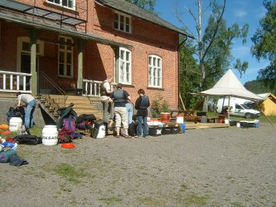
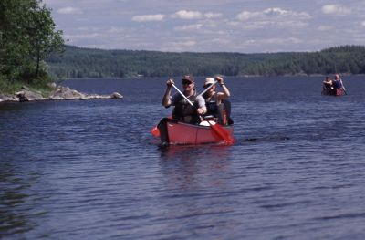
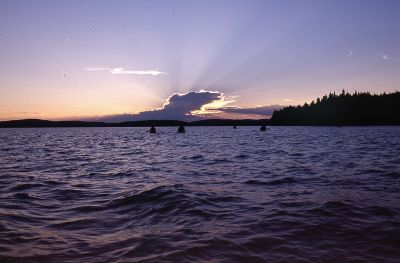
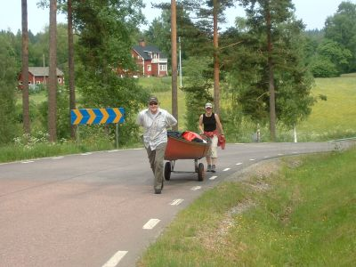
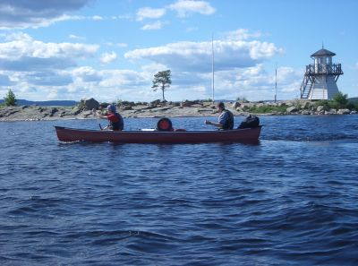

| Home | Kontakt | Steckbrief |
| Wandern/Trekking |
| Klettern/Klettersteige |
| Kanu |
| Fahrradtouren |
|
| Rucksack-Reisen |
| Touren mit Kindern |
| Wissenswertes |
In der Rubrik Rucksack-Reisen befinden sich Touren des Veranstalters
Rucksack-Reisen, die ich als Tourbegleiter betreut habe.
Kanuwoche in VärmlandAusgangspunkt der Kanuwochen des Reiseveranstalters Rucksack-Reisen ist das Aktivcamp in Stömne. Dort beginnt die Kanuwoche am Samstag mit der Ankunft der Gäste und endet freitagnachmittags mit der Reinigung und Einlagerung der Ausrüstung. Die Kanuwochen habe ich im Jahre 2004 und 2005 mehrfach begleitet. Hier ein paar Eindrücke. Ankunft und AufbruchDer Reisebus kommt früh morgens in Stömne an. Zuerst werden die Grundbedürfnisse gestillt. Frühstück. Wo ist die Toilette? Wo ist mein Koffer? Wo sind meine Mitreisenden? Wer ist mein Tourbegleiter? Dann geht es an die Vorbereitung für die Kanuwoche. Welches Paddel passt zu mir? Welche Schwimmweste steht mir am besten? Wie soll ich meine ganzen Klamotten in diese kleine wasserdichte Tonne kriegen? Wo kommen die Zelte und der Schlafsack hin? Wer soll denn die ganzen Lebensmittel essen? Wird das Wetter die ganze Woche so schön bleiben? Gibt es hier Mücken und hilft Autan?

Nach der langen Busfahrt folgt der Packstress Nachdem diese Fragen geklärt sind, verladen wir die Boote auf die Bootswagen und rollen zum Wasser. Das Wasser ist in unserem Fall der vor der Tür liegende Glafsfjorden. Je nach Wetter, Lust, Laune und Müdigkeit von der langen Busfahrt paddeln wir an diesem Tag nicht mehr sehr weit. Es gibt ja für heute auch noch eine Menge weitere Dinge zu lernen. Was mache ich, wenn ein Kanadier kentert? Wie werden die Zelte aufgebaut? Wie funktionieren die Spirituskocher? Wie kriegen wir ein Feuer, auf dem man kochen kann, in Gang? Kann man das Seewasser wirklich trinken? Wie funktioniert der Toilettengang mit dem Klappspaten und wer sind überhaupt meine ganzen Mitreisenden? Gerade die Kenterübung mit Boot über Boot Bergung ist sehr wichtig, denn jeden kann es einmal treffen und da ist es gut, wenn jeder im Team weiß, was er zu tun hat. Als nächstes besprechen wir noch anhand der Karte die ungefähre Route für die nächsten Tage und klären, ob es eine eher sportliche Woche werden oder doch Urlaubcharakter haben soll. Das ausgewählte Paddelrevier lässt eine Runde von 70 bis 130 Kilometern zu. Das Abenteuer beginntWir starten auf dem Glafsfjorden Richtung Süden. Jetzt ist etwas Zeit bei einzelnen Leuten den Paddelstil zu beobachten und eventuell zu verbessern.

Beobachten und optimieren des Paddelstils Schließlich haben wir in den nächsten Tagen eine gewaltige Strecke vor uns und da ist es schon von Vorteil, effektiv und kraftsparend zu paddeln. Nach etwa einer Stunde kommen wir zu einer versteckt liegenden Portagestelle. Dort schieben wir die Boote an Land und gehen mit ihnen fast 4 Kilometer bis zum Nachbarsee, dem Lilla Vaermeln. Hier merken wir, dass sich die noch schweren Boote erstaunlich leicht bewegen lassen, wenn sie erst einmal auf dem Kanuwagen liegen. Mit vielen Autos brauchen wir auf diesem Schotterweg auch nicht zu rechnen und der Schwede fährt im allgemeinen sehr vorsichtig. Am Lilla Vaermeln angekommen, paddeln wir auf ihm in Richtung Norden und unter der Brücke bei Vaermskog hindurch. Wir erreichen den großen Vaermeln, auf dem wir uns einige Tage aufhalten werden.

Abendstimmung auf dem Vaermeln Wir lassen uns vom Wetter, unserer Kondition und unserem Abenteuerdrang leiten. Das Wetter, vor allen Dingen der Wind kann einige Passagen unmöglich machen, so dass wir auch schon einmal den Tag über pausieren und abends, wenn der Wind nachgelassen hat ein Stück paddeln. Das ist kein Problem, denn es wird nie so richtig dunkel. Abends gibt es immer ein reichhaltiges Abendessen, zu dem jeder etwas Kochkunst beitragen kann. Wer sich nicht traut, darf seine Kreativität beim Spülen oder bei der Feuerholzbereitung ausleben. So langsam wird aus Individuen eine Gruppe. Wir tauschen auch häufiger mal die Positionen in den Booten, so dass jeder mal mit jedem und an jeder Position paddeln kann. Am Nordufer des Vaermeln gibt es mit Brunskog und Edane zwei Ortschaften, die ein Lebensmittelgeschäft haben. Hier füllen wir unsere Vorräte auf und ergänzen sie mit frischen Sachen. Nahe bei Edane liegt eine weitere Portagemöglichkeit zurück in den Glafsfjorden. Diesmal geht es über eine Asphaltstraße. Die Wagen rollen zwar besser, aber es geht auch steiler bergauf und bergab.

Portage zurück in den Glafsfjorden Bei entsprechenden Bedingungen kann man auf dem Glafsfjorden sogar noch bis nach Arvika hinaufpaddeln. Wir fahren aber meistens nur bis zu einer Insel südlich von Arvika, auf der sich ein markanter Aussichtsturm befindet.

Markanter Aussichtsturm Von dort fahren wir in zwei Tagen den Glafsfjorden nach Süden und haben viel Zeit zum Baden und Relaxen. In Glava gibt es z. B. eine offizielle Badestelle von der aus man in einer kurzen Wanderung einen kleinen Supermarkt erreichen kann. Am Ostufer des Sees liegt Klaesböl. Dort kann man im Hafen anlanden und neben der bekannten Damastweberei weitere Kunsthandwerker beobachten. Am Freitagnachmittag kommen wir wieder im Aktivcamp in Stömne an. Die RückkehrVor der von allen heiß ersehnten Dusche liegt noch das Reinigen, Checken und Einlagern der Ausrüstung für die nächste Gruppe an. Angebrochene, aber noch brauchbare Lebensmittel bekommt die Campküche und die unversehrten Sachen gehen ins Lager. Die letzte Nacht zelten wir in der Nähe des Hauses und lassen uns bekochen. Am nächsten Tag ist bis zur Abfahrt des Busses noch genügend Zeit für eine Radtour oder eine Wanderung in der Umgebung des Hauses. Oft haben die Gäste auch noch eine weitere Woche mit verschiedenen Tagesaktivitäten in der näheren Umgebung gebucht.Informationen: Reiseinformation von Rucksack-Reisen Kanutouren in Schweden |